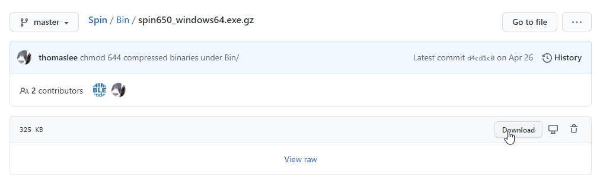
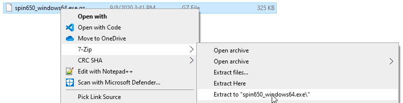
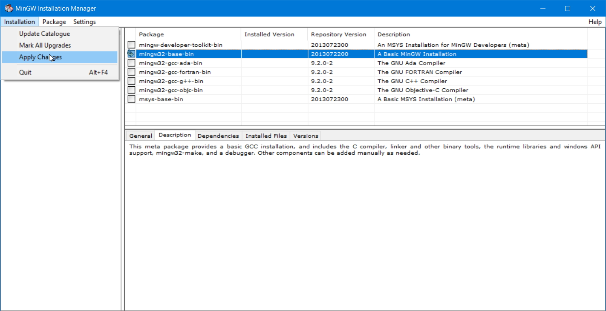
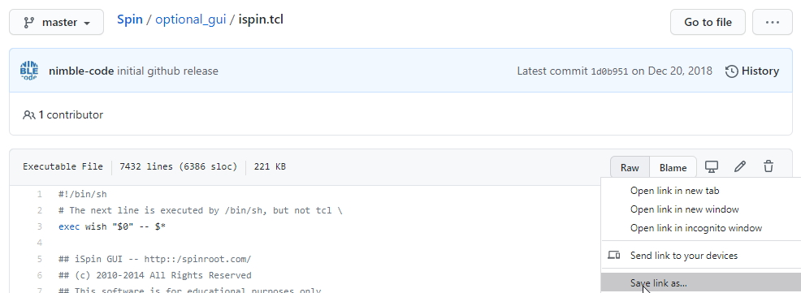
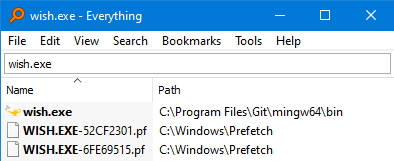
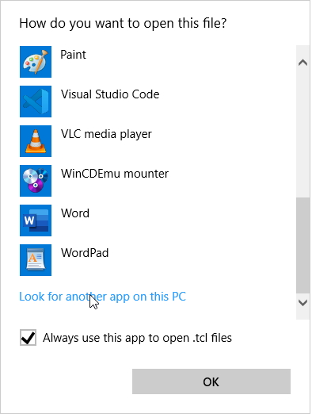
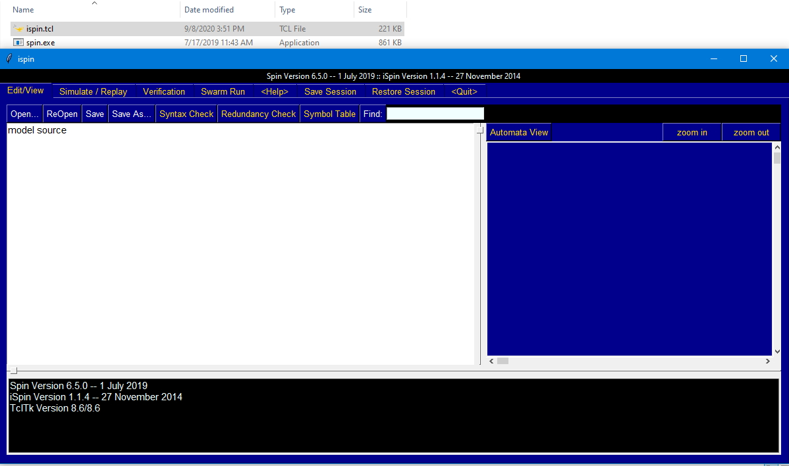
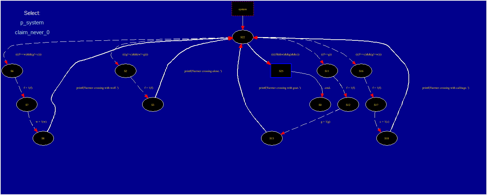

Spin Model Checker on Windows

Table of Contents
Introduction
For a class, I was trying to install the Spin formal verification tool somehow on my Windows computer. I couldn’t find a good guide, so this is what I figured out.
While you can do this with WSL, Spin has prebuilt Windows binaries available, so I think this is easier than trying to get X11 working (as of Sept 2020).
Prerequisites
You’ll need the following software installed:
The following will make life easier:
If you’re using Chocolately, this can all be installed with:
choco install 7zip git everythingDownloading/Extracting Spin
First, go to the Spin GitHub page. If you
already have Git installed, you can just clone this. Or, if you’d like,
you can go to Bin directory,
and click on the latest version of
spin<ver>_windows64.exe.gz. Click “Download” on the right side to get
only this file.

Once that’s downloaded, use 7zip to extract the archive.

Inside the directory it extracted into will be an executable. Rename this to spin.exe.
GCC
Next, Spin needs the GCC compiler in order to compile the generated C verifier. The easiest way to get this is with MinGW which is a project that has ported GCC to Windows. Download and run the installer, and select the base MinGW package (this includes GCC).

You may need to add C:\MinGW\bin\ to your PATH after it installs GCC.
You can verify it is setup correctly by running gcc in a shell and making sure
you don’t get a “gcc not found” error.
If you’re using Chocolately, this can alternatively be installed with:
choco install mingwThis will setup your PATH for you.
Now, if you only want the command-line version of Spin, you’re basically done.
You’ll need to use the full path to the spin.exe executable (unless you
add spin.exe to your PATH).
GUI
Now, if you’d like to use the GUI, complete the following steps. Buckle up.
First, you’ll need to download
ispin.tcl
from the optional_gui directory on the Spin GitHub page. The easiest way to do
this is to right-click “Raw” and then “Save link as”.

Save this wherever you like.
Now, the GUI needs to know where spin.exe is. There are two options.
- Add
spin.exeto your PATH. Recommended Edit
ispin.tclon line 19 to replaceset SPIN spin ;# essentialwith something like
set SPIN "C:/Program\ Files\ \(x86\)/spin650_windows64/bin/spin";# essentialto point where ever you put
spin.exe. Make sure properly escape the Windows path characters.
The next problem is getting Tcl/Tk installed, which is needed to run this file.
Git for Windows
If you have installed Git for Windows, it likely already has already installed Tcl/Tk
(or another program may have installed it).
An easy way to check is to open up Everything,
and look for wish.exe.

All you need to do is right-click on ispin.tcl, choose “Open With”,
and select the wish.exe you found. Make sure to set
“Always use this app to open .tcl files”.

With that, you should be able to launch the GUI for Spin
by double-clicking on ispin.tcl.

Tcl/Tk Distributions
Let’s say you don’t have Git installed. There are other ways to get Tcl/Tk. The easiest is ActiveTCL as this will automatically setup all the proper file associations. However, they require you to create an account to download it.
Another option is
Magicsplat,
but this does not setup the file associations, so you’ll have to do it manually, like
I described above, after finding wish.exe.
Graphviz
This last part is optional. If you want the automata view to work, you’ll need to install Graphviz. Go to the downloads page and get the latest .zip file.
Extract this and put it somewhere useful like C:\Program Files (x86)\.
You can add the bin directory to your PATH if you like.
If you’re using Chocolately, this can alternatively be installed with:
choco install graphvizLastly, you’ll need to edit ispin.tcl again. Comment out line 21, and uncomment
line 22, and adjust the path to dot as needed. For example:
# set DOT dot ;# recommended, for automata view
set DOT "C:/Program\ Files\ \(x86\)/graphviz-2.44.1-win32/Graphviz/bin/dot";(Even if dot.exe is added to your PATH, I’ve found it will still not work without doing this)
You should be all set now.

Conclusion
This is all you need to run Spin with the GUI on Windows! While it may seem a bit complicated, you should really only have to do this once.
I really do recommend using Chocolately to make installing everything easier. Installing the vast majority of the dependencies becomes one command:
choco install 7zip git everything mingw graphvizIf this seems like a lot of work, I’ve found another Spin GUI
available: jspin.
This has its own installation challenges (needing a Java runtime and requiring
some PATH configuration in its config.cfg file), but it seems
to work similarly and be far easier to get setup.